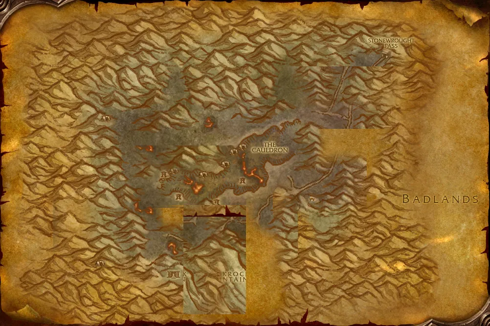

Accès
 Entrée Gorge des Vents brûlants 34.8, 85.3
Entrée Gorge des Vents brûlants 34.8, 85.3 5 joueurs · niveaux 52 à 60
5 joueurs · niveaux 52 à 60 41 quêtes · 18 boss
41 quêtes · 18 boss
Le point rouge marque l'entrée du donjon.
Toutes les zones sont sur notre carte interactive.
La cité des nains Sombrefer au cœur du Mont Rochenoire, le plus grand donjon du jeu.
📅 Mise à jour le 14 novembre 2026🛠 Patch 1.60.1.70938

Entrée Gorge des Vents brûlants 34.8, 85.3 5 joueurs · niveaux 52 à 60 41 quêtes · 18 bossLe point rouge marque l'entrée du donjon.
Toutes les zones sont sur notre carte interactive.
| Objet | Type |
|---|---|
| Bouclier du Golem de roche | Bouclier |
| Pierre de la Terre | Deux mains |
| Bottes Shalehusk | Pieds |
| Chaussures encroûtées de suie | Pieds |
| Objet | Type |
|---|---|
| Bouquet de roses rouges | Main gauche |
| Bottes du marcheur vif | Pieds |
| Gants du héraut exalté | Mains |
| Bottes de la grande prêtresse | Pieds |
| Spallières d'acier ébène | Épaules |
| Objet | Type |
|---|---|
| Anneau des grandes arcanes | Doigt |
| Second souffle | Bijou |
| Bottes de concentration | Pieds |
| Kilt d'illumination | Jambes |
| Objet | Type |
|---|---|
| Jambières de force volcanique | Jambes |
| Force du magma | Deux mains |
| Marteau de rubidium | Main droite |
| Echarpe du coeur ardent | Taille |
| Objet | Type |
|---|---|
| Brachiales en peau cendrée | Poignets |
| Garde-poignets en pyromailles | Poignets |
| Crispins de tisse-flammes | Poignets |
| Garde-bras en plaques de braise | Poignets |
| Objet | Type |
|---|---|
| Amict d'illumination | Épaules |
| Sphère des Exaltés | Main gauche |
| Cape du voile noir | Dos |
| Grèves du désespoir cinglant | Pieds |
| Objet | Type |
|---|---|
| Chapeau d'hiver rouge | Tête |
| Robe de la couronne royale | Torse |
| Sceptre royal de Thaurissan | Main gauche |
| Bâton guide de sagesse | Deux mains |
| Sceau de l'Empereur | Doigt |
| Echarpe de la Grande chasse | Taille |
| Main de justice | Bijou |
| La cape neuve de l'Empereur | Dos |
| Vengeresse d'effroi | Deux mains |
| Joyau impérial | Cou |
| Bracelets de renom | Poignets |
| Objet | Type |
|---|---|
| Robe de marcheur des flammes | Torse |
| Caducée de Pyric | Distance |
| Jambières ardentes | Jambes |
| Bâton de pyromancien | Deux mains |
| Objet | Type |
|---|---|
| Bouclier de garde renforcée | Bouclier |
| Epaulières du terril | Épaules |
| Mantelet de l'espoir perdu | Épaules |
| Idole de férocité | Relique |
| Objet | Type |
|---|---|
| Force de volonté | Bijou |
| Hache de guerre de Forgehargne | Deux mains |
| Epée du seigneur général | Main droite |
| Armure décorée royale | Torse |
| Jambières d'acrobate | Jambes |
| Objet | Type |
|---|---|
| Mantelet boréal | Épaules |
| Ceinturon d'acier glacé | Taille |
| Lame de l'arbitre | Main droite |
| Espauliers du Sombre gardien | Épaules |
| Objet | Type |
|---|---|
| Collier de Verek | Cou |
| Laisse de Verek | Taille |
| Objet | Type |
|---|---|
| Monocle d'architecte en chef | Tête |
| Pantalon du grand concepteur | Jambes |
| Mantelet de géomètre en chef | Épaules |
| Protège-tête de contremaître | Tête |
| Objet | Type |
|---|---|
| Courroux des flammes | Deux mains |
| Cape de la salamandre de feu | Dos |
| Poings de la fournaise | Mains |
| Bijou de connaissance | Bijou |
| Cercle de flammes | Tête |
| Objet | Type |
|---|---|
| Cape de l'esprit follet | Dos |
| Bottes de sagacité | Pieds |
| Arc du chef de meute | Distance |
| Carabine de maître-chien | Distance |
| Objet | Type |
|---|---|
| Tesson du tavernier | Main droite |
| Tunique de mixologue | Torse |
| Objet | Type |
|---|---|
| Poing de sang | Une main |
| Poings de la Phalange | Mains |
| Espauliers de golem ajustés | Épaules |
| Objet | Type |
|---|---|
| Heaume du crâne de golem | Tête |
| Pierre de Magmus | Main gauche |
| Marteau en pierre de lave | Deux mains |
| Totem de rage | Relique |
| Libram de vérité | Relique |
Butin d'après les données de WoW Classic : Forever a ajouté de nouveaux objets dans les donjons, la liste sera complétée en jeu. Seuls les objets de qualité inhabituelle et mieux sont listés. Passe la souris sur un objet pour voir ses caractéristiques (info-bulle Wowhead), ou clique pour ouvrir sa fiche.
Donnée par : Soldat Rocknot (Profondeurs de Blackrock)
Donnée par : Franclorn Forgewright (Steppes ardentes)
Donnée par : Franclorn Forgewright (Steppes ardentes)
Récompense : Clé ombreforge
Donnée par : Galamav le Tireur d'élite (Terres ingrates)
Donnée par : —
Donnée par : Yuka Screwspigot (Steppes ardentes)
Récompense : Bottes de rancune · Spallières de pénitence · Armure d'acier éclissé
Donnée par : Yorba Screwspigot (Tanaris)
Donnée par : Maréchal Windsor (Profondeurs de Blackrock)
Récompense : Heaume de conservateur · Bottillons renforcés · Jambières de Windshear
Donnée par : Ombremage Vivian Lagrave (Terres ingrates)
Récompense : Sceau de Lagrave
Donnée par : Gouvernante Nagmara (Profondeurs de Blackrock)
Récompense : Ceinture de Nagmara · Bracelets de prisonnier
Donnée par : Thrall (Orgrimmar)
Donnée par : Maréchal Maxwell (Steppes ardentes)
Donnée par : Commandant Gor'shak (Profondeurs de Blackrock)
Donnée par : Commandant Gor'shak (Profondeurs de Blackrock)
Donnée par : —
Donnée par : Ragnar Thunderbrew (Dun Morogh)
Récompense : Masse de frappe rapide · Tranche-tailleuse · Bière brune naine
Donnée par : Ombremage Vivian Lagrave (Terres ingrates)
Récompense : Potion de soins excellente · Potion de mana supérieure · Masse de frappe rapide · Tranche-tailleuse
Donnée par : —
Donnée par : Maxwort Uberglint (Steppes ardentes)
Donnée par : Enohar Thunderbrew (Terres foudroyées)
Donnée par : Apothicaire Zinge (Fossoyeuse)
Donnée par : Thunderheart (Terres ingrates)
Récompense : Brassards de démon des cryptes · Cape de l'hélionaute · Gants crépusculaires · Etreinte loyale
Donnée par : Oralius (Steppes ardentes)
Récompense : Une sacoche surprise
Donnée par : Jalinda Sprig (Steppes ardentes)
Récompense : Brassards de démon des cryptes · Cape de l'hélionaute · Gants crépusculaires · Etreinte loyale
Donnée par : Maréchal Windsor (Profondeurs de Blackrock)
Récompense : Lame de rétorsion · Dague de maîtrise · Gardien des éléments
Donnée par : Lexlort (Terres ingrates)
Donnée par : Lotwil Veriatus (Terres ingrates)
Récompense : Broigne basaltique · Amict de lune azur · Drapé de pluviomancien · Gantelets volcaniques
Donnée par : Chef de guerre Goretooth (Terres ingrates)
Récompense : Médaillon du Conquérant
Donnée par : Grark Lorkrub (Steppes ardentes)
Donnée par : Maréchal Windsor (Profondeurs de Blackrock)
Donnée par : Cyrus Therepentous (Steppes ardentes)
Récompense : Cape peau-de-schiste · Spallières en peau de wyrm · Echarpe valconienne
Donnée par : en ramassant Une note chiffonnée
Donnée par : Roi Magni Bronzebeard (Forgefer)
Donnée par : Princesse Moira Bronzebeard (Profondeurs de Blackrock)
Récompense : Pierre chantante d'Ironforge · Volonté de Magni
Donnée par : Roi Magni Bronzebeard (Forgefer)
Donnée par : Kharan Mighthammer (Profondeurs de Blackrock)
Donnée par : Kharan Mighthammer (Profondeurs de Blackrock)
Donnée par : Thrall (Orgrimmar)
Donnée par : Princesse Moira Bronzebeard (Profondeurs de Blackrock)
Récompense : Résolution de Thrall · Oeil d'Orgrimmar
Donnée par : Falrin Treeshaper (Hache-tripes)
Donnée par : en ramassant Contrat de la Confrérie du Thorium
Récompense : Plans : Marteau en sulfuron
Noms des quêtes, des PNJ et des objets d'après les données du jeu (Polestar, CC BY 4.0, et Factoruide/Questie).